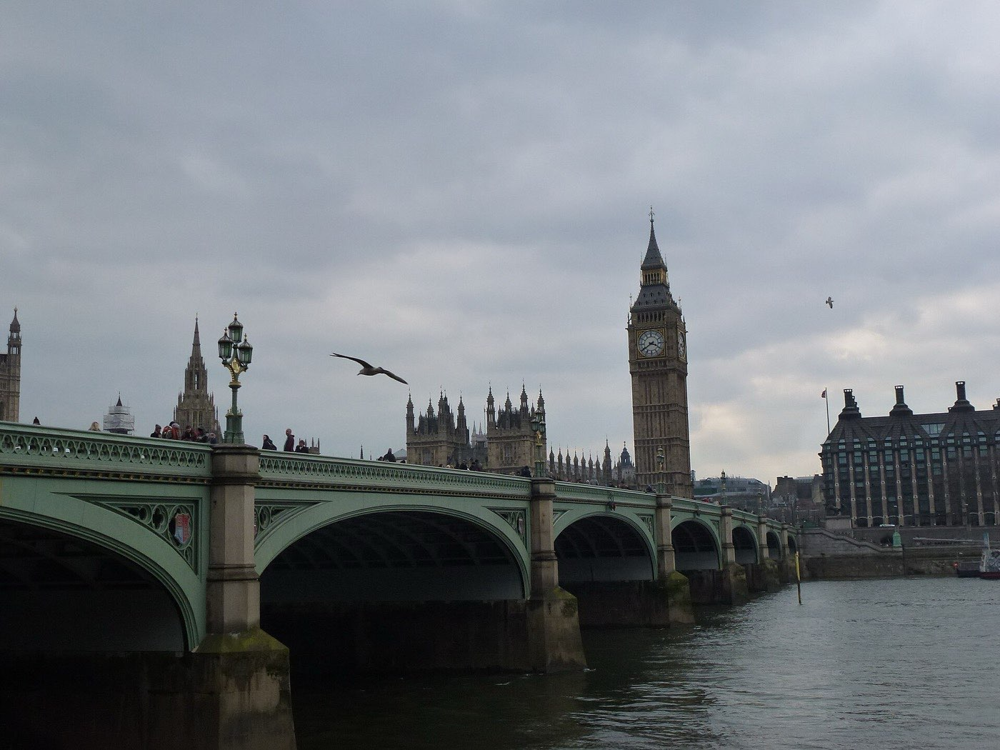
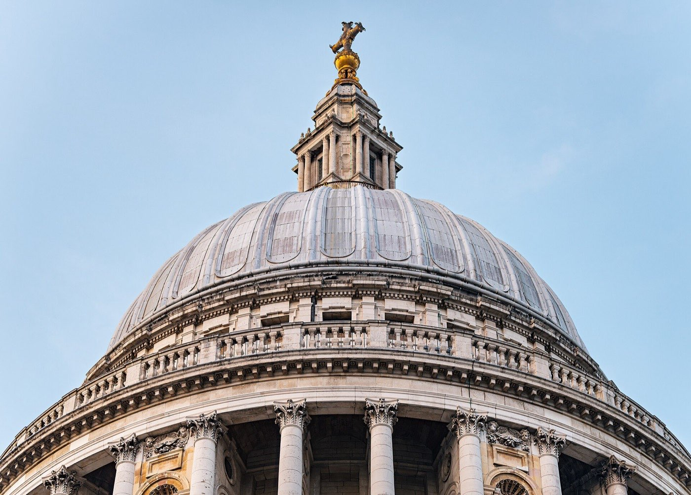
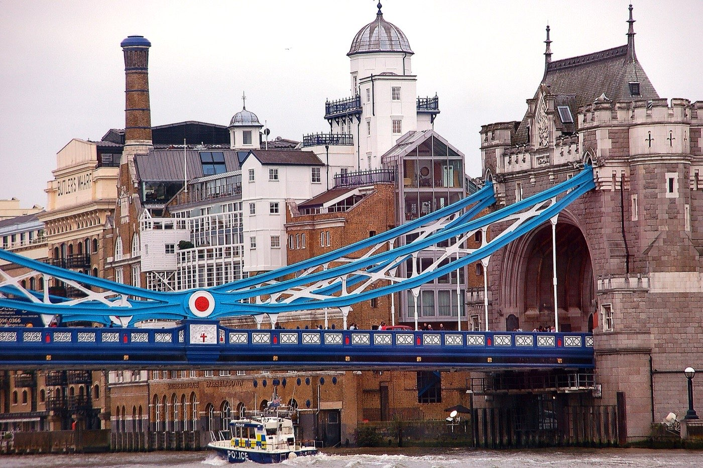
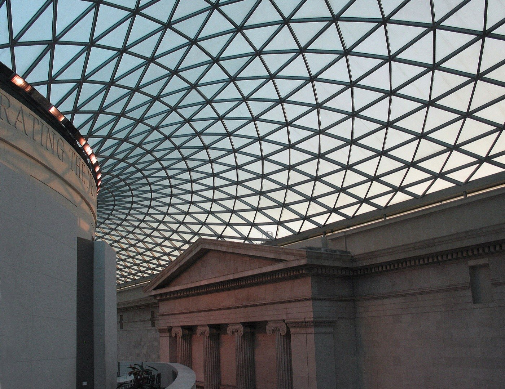

London · 3 days
3 Days in London: What You Actually Have to See
Three days is enough for London's essentials, but only if you understand when things shut. Here is what genuinely has to be on the list, ordered around the closing times that catch everyone out, and an honest account of what is worth paying for.

Three days covers London's essentials comfortably: Westminster and the river, the Tower and the City, and the free museums with the West End around them. What it does not cover is Greenwich, Hampton Court or Windsor, each of which eats a day and is the thing most three-day itineraries wrongly try to squeeze in.
London is too big to improvise in, so the plan below works in three clusters and walks inside each one. But the thing that actually breaks people's days is not distance. It is closing time. Westminster Abbey stops admitting sightseers at half past three. The British Museum turns everyone out at five. Meanwhile the river, the parks, the markets and the streets stay open as long as you want them.
Do the ticketed thing first, every day. Anything with a door and a collection behind it closes early in London, often absurdly early. Anything free and outdoors does not close at all. Front-load each day with the building you have to be let into, and save the walking, the river and the views for when the doors have shut behind you.
Day 1 — Westminster, Whitehall and the South Bank
Westminster Abbey is the hard deadline of the whole trip. It admits sightseers from 9.30am on weekdays and stops at 3.30pm, closes earlier still on Saturdays, and shuts to visitors entirely on Sundays, when it is open for worship only. Everything else on this day is outdoors and forgiving, so the Abbey goes first and nothing else moves.
From there the day is a walk. Parliament Square, down Whitehall past the mounted guards, into Trafalgar Square, and then either the National Gallery or straight across the river. If it is a Friday, save the National Gallery for the evening: it stays open until 9pm, which makes it the one great collection in London you can visit after dinner.
The must-sees
The Abbey has to happen before mid-afternoon. After that the day is outdoors and the order stops mattering.

Day 2 — The Tower, the river and Bankside
The Tower of London is the one big paid attraction in this guide that earns its ticket, and it needs a morning rather than an hour. Book ahead. The Yeoman Warder tours are included and are the best thing in it. Join one before you go anywhere near the Crown Jewels queue.
After that the day runs west along the Thames on foot: Tower Bridge, the south bank past Shad Thames, Borough Market, Tate Modern, and the Millennium Bridge pointing straight at St Paul's. Almost all of it is free. St Paul's is the exception, and on Sundays it does not open to sightseers at all.

The must-sees
One ticket in the morning, then a free walk west along the water for the rest of the day.
Day 3 — The British Museum, the West End and a free view
The British Museum is free and closes at five, which makes it a morning. Free timed tickets are worth booking in the busy months even though entry costs nothing. Do not try to see all of it. Pick three or four things, walk to them, and leave.
Then the West End on foot: Bloomsbury into Covent Garden and Soho, which are close enough together that the Underground between them is a waste of a fare and often slower than walking. Finish somewhere high. The best view of London is free and higher than the one people queue to pay for.

The must-sees
Museum first because it shuts at five. Everything after it is streets, and streets do not close.
What is free, what is worth paying for, and what is not
| What | Cost | Verdict |
|---|---|---|
| British Museum, National Gallery, Tate Modern, V&A, Natural History | Free | Permanent collections cost nothing. Only the special exhibitions charge |
| Sky Garden | Free, booked | 155 m, and twenty metres higher than the wheel people pay for |
| Tower of London | Paid | The one big ticket that earns it. Book ahead and take the Warder tour |
| Westminster Abbey | Paid | Worth it, if you get through the door before the mid-afternoon cutoff |
| St Paul's dome climb | Paid | Worth it for the galleries. No sightseeing at all on Sundays |
| London Eye | From £29 | Skip it. The Sky Garden is free, higher, and has the Eye in the view |
| Tower Bridge exhibition | Paid | Skip. Walking over the bridge is free and is the actual experience |
| The London Pass | Paid | Skip on three days. Most of what you will see is already free |
When things shut
| Where | Closing | So |
|---|---|---|
| Westminster Abbey | 15:30 weekdays, 15:00 Sat, no sightseeing Sun | A morning, and never a Sunday |
| British Museum | 17:00 daily | A morning, or an early afternoon at the latest |
| National Gallery | 18:00, and 21:00 on Fridays | The one collection you can do after dinner, on a Friday |
| Sky Garden terrace | 18:00 | Sunset only in the winter months |
| The river, the parks, the markets | Not a problem | Everything free and outdoors is the back half of the day |
What three days does not cover
Cutting deliberately beats rushing. These need more time than you have:
- Greenwich — the observatory, the meridian and the Cutty Sark are a full day, and the river boat down is half the point.
- Windsor or Hampton Court — a day trip out of the city, not an afternoon.
- South Kensington's museums — the V&A and the Natural History Museum are free and enormous, and each deserves a morning of its own.
- A West End show — worth doing, and it takes an evening you have already spent walking.
- Anything east of the Tower — Shoreditch, Spitalfields and the markets out that way are a separate day.
Common questions about 3 days in London
Is 3 days enough for London?
For the essentials, yes. Three days covers Westminster and the river, the Tower and the City, and the British Museum with the West End around it. It is not enough to add Greenwich, Windsor or the South Kensington museums, each of which needs the better part of a day.
Are London museums really free?
Yes. The permanent collections at the British Museum, the National Gallery, Tate Modern, Tate Britain, the V&A, the Natural History Museum, the Science Museum and the National Portrait Gallery are all free to enter. Only the temporary special exhibitions are ticketed, and none of them is compulsory.
Is the London Eye worth it?
Not on a short trip. Tickets start around £29 online and cost more on the door, and the Sky Garden is free with a booked ticket, stands twenty metres higher, and has the London Eye in the view. Book the free one instead and put the money into the Tower.
Is the London Pass worth it?
Rarely on three days. Most of what a first visit wants to see, the great museums and galleries, is free without any pass at all. That leaves a handful of paid attractions, and buying two or three of them directly usually costs less than the pass.
What days is Changing the Guard?
It normally runs on Mondays, Wednesdays and Fridays at 11am, with inspections on the other days. It is called off in heavy rain, sometimes at short notice, so check the official schedule that morning rather than building your day around it.
What is closed on Sundays in London?
Westminster Abbey shuts to sightseers entirely and opens for worship only. St Paul's does not open its main floor to visitors either. Borough Market runs a reduced operation early in the week. The museums, the parks and the river are all unaffected, so Sunday is the day to spend outdoors and in free collections.
How do you get around London?
Walk inside each cluster and use the Underground only to jump between them. Tap in and out with a contactless card or phone, which fares-caps automatically over a day, so no travelcard is needed. Short central hops are usually faster on foot than underground once you count the stairs.
Tailored to your trip
Travelling to London? Plan your trip around your real arrival and departure times.
Download iOS App